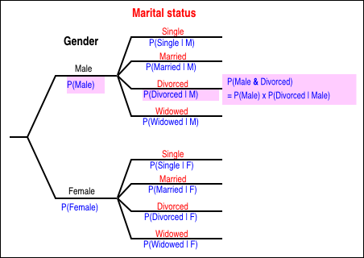
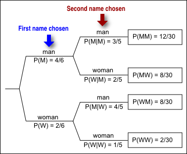

Two categorical variables (or partitions of the sample space) are sometimes represented in a tree diagram. The main branches of the tree correspond to the possible values for the first of these variables. At the end of each of these branches, further branches are drawn for each possible value of the second variable.
The main branches are usually labelled with their marginal probabilities. The branches to the right are labelled with their conditional probabilities, conditional on the branches to the left leading to that fork.
Evaluating joint probabilities
Joint probabilities can be found by multiplying the probabilities down branches. This corresponds to the general multiplication rule,
\[ P(A \textbf { and } B) \;=\; P(A) \times P(B \mid A) \]
Sampling without replacement
Tree diagrams are more useful for problems in which there is a natural ordering of the two measurements.
An important example of this is when two or more items are selected from a finite population without replacement — in other words, when the same item cannot be selected more than once. The probabilities for the second item chosen depend on which item was chosen first.
The tree diagram below relates to the sex of two students chosen from a class of 2 women and 4 men.
